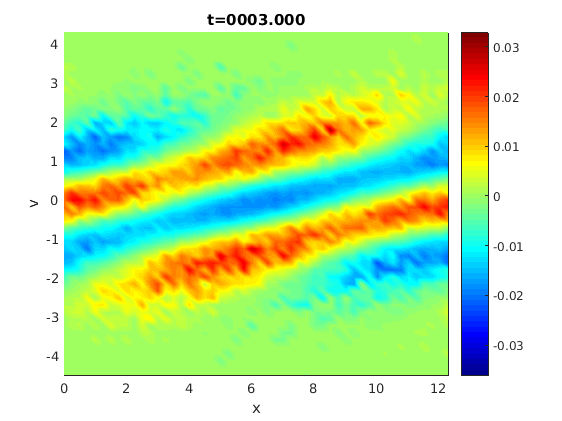
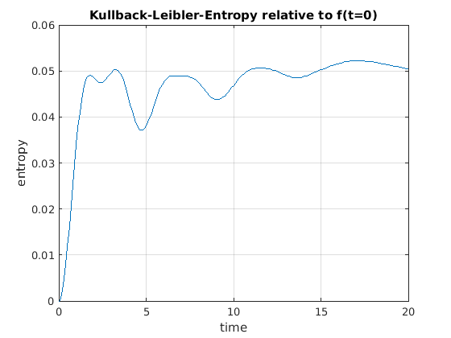

Particle in Cell 2D for Vlasov-Poisson-Fokker-Planck
Author: Jakob Ameres jakobameres.com
Contents
- Features
- Equations
- Solver parameters
- Landau Damping parameters
- Fokker-Planck
- Neirest neighbour coarse graining
- Control variate
- Phase space histogram
- Initialize particles - Sampling
- Initialize B-Spline Finite Element Poisson Solver
- Set coefficients for symplectic Runge Kutta
- Particle Weight for field solve
- Determine psi_k, all testfunctions,
- Phase space histogram
- Determine d/dx psi_k, gradient of testfunctions
- Fokker Planck collisions
- Coarse graining
- Discussion
Features
- Arbitrary degree B-Spline Finite Elements
- Symplectic (for Vlasov-Poisson) Runge Kutta time integrator
- Control Variate for Field Solve
- Fokker-Planck collisions by Ornstein-Uhlenbeck process
- Neirest neighbour coarse graining
- Phase space density reconstruction by histogram
Equations
This code solves the Vlasov-Poisson system coupled to linear Fokker-Planck. The Vlasov Fokker-Planck equation reads
coupled to the Poisson equation for the potential
Solver parameters
Np=5e4; % Number of particles Nf=32; % Number of finite element basis functions degree=3; % B-Spline degree rungekutta_order=3; %Order of the runge Kutta time integrator dt=0.1;
Landau Damping parameters
eps=0.05; % Amplitude of perturbation, 0.05 for linear, 0.5 for nonlinear k=0.5; % Wave vector L=2*pi/k; % length of domain qm=-1; % negative charge to mass = electrons, $\frac{q}{m}=-1$ % Initial condition f0=@(x,v) (1+ eps*cos(k*x)).*exp(-0.5.*v.^2)/sqrt(2*pi); tmax=20;
Fokker-Planck
Collision frequency
fokker_planck.theta=1e-3; % weak 1e-3, strong 0.1, none 0 % Additional parameters for equilibrium % if empty, then determined by simulation for momentum % and kinetic energy conservation fokker_planck.mu=[]; %0 fokker_planck.sigma=[]; %1*sqrt(2*fokker_planck.theta)
Neirest neighbour coarse graining
coarse_grain.freq=1e4; %Frequency coarse_grain.neighbours=5; %number of nearest neighbours to grain
Control variate
%h=[]; % Empty for full f, requires much more particles, e.g. Np=1e6 h=@(x,v) exp(-0.5.*v.^2)/sqrt(2*pi); %maxwellian for delta f %h=f0 % initial condition for delta f
Phase space histogram
Parameters Background that is subtracted in the plot set to empty [] if no background is supplied
ph_hist.background=@(x,v) exp(-0.5.*v.^2)/sqrt(2*pi); ph_hist.numx=50; %Number of cells in x ph_hist.numv=50; %Number of cells in v ph_hist.freq=10; %Frequency of the time consuming plot, %Note: the binning is cheap, but the graphics expensive % Initialization ph_hist.x=linspace(0,L,ph_hist.numx+1); %Bin edges can be nonuniform ph_hist.v=linspace(-4.5,4.5,ph_hist.numv+1); [ph_hist.xx,ph_hist.vv]=ndgrid(ph_hist.x(1:end-1),ph_hist.v(1:end-1)); % mesh %Determine cell volume phi_hist.vol=diff(ph_hist.x)'*diff(ph_hist.v); %Set initial value for phase space phasespace=f0(ph_hist.xx,ph_hist.vv); if ~isempty(ph_hist.background) %subtract background if defined phasespace=phasespace-ph_hist.background(ph_hist.xx,ph_hist.vv); end %Define limits for adaptavive colorbar phi_hist.limits=[min(min(phasespace)), max(max(phasespace))];
Initialize particles - Sampling
xk=rand(Np,1)*L; % Uniformly distributed U(0,L) vk=randn(Np,1)*1 + 0; % Normally distributed N(0,1) g0=@(x,v) exp(-0.5.*v.^2)/sqrt(2*pi)/L; %Initial sampling density fk=f0(xk,vk); % Vlasov likelihood gk=g0(xk,vk); % Particle (Sampling) likelihood
Initialize B-Spline Finite Element Poisson Solver
fem.knots=linspace(0,L,Nf+1); % Knots for B-Splines fem.dx=fem.knots(2)-fem.knots(1); fem.pp=bspline(fem.knots(1:degree+2)); % Plot first basis function $\psi_1(x)$ x=linspace(min(fem.pp.breaks),max(fem.pp.breaks)); figure('Name','Basis Function','Numbertitle','off'); plot(x,ppval(fem.pp,x)); axis([x(1),x(end),-inf,inf]); grid on; xlabel('x'); ylabel('basis function'); title('B-Spline Basis Function'); % Finite element matrices % Dervative of Testfunction fem.pp_prime=fnder(fem.pp,1); fem.Krow=zeros(degree+1,1); for idx=1:degree+1 offset=(idx-1)*fem.dx; % L2 projection fem.Mrow(idx)=integral... ( @(x) ppval(fem.pp,x).*ppval(fem.pp,x-offset ),... offset, max(fem.pp_prime.breaks)); % Poisson Matrix fem.Krow(idx)=integral... ( @(x) ppval(fem.pp_prime,x).*ppval(fem.pp_prime,x-offset ),... offset, max(fem.pp_prime.breaks)); end % Assemble circulant matrices % Mass matrix first_row=zeros(Nf,1); first_row(1:degree+1)=fem.Mrow; first_row(end:-1:end-degree+1)=fem.Mrow(2:end); fem.M=sparse(gallery('circul',first_row)); %Circulant matrix from first row % Poisson Matrix - weak laplace first_row=zeros(Nf,1); first_row(1:degree+1)=fem.Krow; first_row(end:-1:end-degree+1)=fem.Krow(2:end); fem.K=sparse(gallery('circul',first_row)); %Determine right hand side for control variate h if present if isempty(h) rhs_h=0; else fprintf('Assembling right hand side for control variate\n') fprintf('This is very general, and will take some time!\n') rhs_h=zeros(Nf,1); for idx=1:Nf offset=(idx-1)*fem.dx; %Choose large tolerances to speed up computation %Integral psi(x) h(x,v) dxdv rhs_h(idx)=integral2... (@(x,v)ppval(fem.pp,x-offset).*h(mod(x,L),v),... 0+offset,fem.dx*(degree+1)+offset,... -inf,inf,... 'method','iterated',... 'RelTol',1e-2,... 'AbsTol',1e-3); end fprintf('Done\n'); end
Assembling right hand side for control variate This is very general, and will take some time! Done
Set coefficients for symplectic Runge Kutta
switch rungekutta_order case 1 rksd=[1, 0]; %Symplectic Euler rksc=[0, 1]; case 2 rksd=[0.5, 0.5 ]; rksc=[0, 1]; case 3 rksd=[2/3, -2/3, 1 ]; rksc=[ 7/24, 3/4, -1/24]; case 4 rk4sx=real((2^(1/3) +2^(-1/3)-1)/6); rksd=[ 2*rk4sx +1 , -4*rk4sx-1, 2*rk4sx+1, 0]; rksc=[ rk4sx + 0.5 , -rk4sx, -rk4sx, rk4sx +0.5]; end %Allocate output cv=struct('alpha',[],'rho',[]); %Control variate diagnostic tstep=1; figure('Name','Phase Space Density','Numbertitle','off'); for t=0:dt:tmax fprintf('t=%08.3f, %05.2f%%\n ', t, t/tmax*100) xk=mod(xk,L); %Loop over all stages of the Runge Kutta method for rksidx=1:length(rksd)
Particle Weight for field solve
if isempty(h) %full f = no control variate wk=fk./gk; rhs_cv=0; else %delta f with control variate hk=h(xk,vk); %Test moment psik=(xk-L/2).^2; %sin(xk./2*pi./L), xk^3 %Determine correlation sigma=cov([fk./gk.*psik,hk./gk.*psik]); %Optimization coefficient cv.alpha(tstep)=sigma(2,2:end)\sigma(1,2:end); %Correlation coefficient cv.rho(tstep)=sigma(1,2)./sqrt(prod(diag(sigma))); wk=(fk-cv.alpha(tstep)*hk)./gk; rhs_cv=cv.alpha(tstep)*rhs_h; end
Determine psi_k, all testfunctions,
evaluated for all particles, results in a sparse matrix
%cell number for every particle [~, particle_cell]=histc(xk, fem.knots); % go to local coordinates in cell xx=mod(xk,fem.dx); row=repmat( (1:Np), degree+1,1).'; % Row index (Particle) col=zeros(Np,degree+1); % Column index (Basis function) val=zeros(Np,degree+1); %Evaluate every piece of the piecewise polynomial basis function for kdx=0:degree col(:, kdx+1)=mod((particle_cell-1-kdx),Nf)+1; val(:, kdx+1)=polyval(fem.pp.coefs(kdx+1,:),xx).*wk; end %psik=sparse(row, col,val,Np, Nf ); %Includes also particle weight %rhs=mean(psik).'; % Mean over all basis functions (weighted) %rhs_cov=cov(psik); %Covariance % Fast accumulation, for mean rhs=accumarray([reshape(col,numel(col),1); (1:Nf)'], ... [reshape(val,numel(val),1); zeros(Nf,1)])./Np... +rhs_cv; rho=fem.M\rhs; %L2 projection for charge density %Poisson solve fem.K_fourier=fft(full(fem.K(1,:))).'; phi=fft(full(rhs),[],1)./fem.K_fourier; phi(1,:)=0; %offset phi=real(ifft(phi,'symmetric')); %Diagnostic if (rksidx==1) kineticenergy(tstep)=0.5*mean(vk.^2.*fk./gk); fieldenergy(tstep)=(qm).^2*0.5*phi'*fem.K*phi; momentum(tstep)=mean(vk.*fk./gk); l2norm(tstep)=mean(fk.^2./gk); %Kullback-Leibler-Entropy relative to initial condition kl_entropy(tstep)=mean(fk./gk.*log(fk./f0(xk,vk))); %Shannon entropy sh_entropy(tstep)=mean(fk.*log(fk)./gk); end if (rksidx==1 && mod(tstep-1,ph_hist.freq)==0)
Phase space histogram
[~,cellx]=histc(xk,ph_hist.x); %bin particles to cells [~,cellv]=histc(vk,ph_hist.v); % and get the indicies %particles out of range are remapped, but not discarded cellv=min(max(1,cellv), ph_hist.numv); %Accumulate weight in boxes and normalize phasespace=accumarray( [cellx,cellv], wk,... [ph_hist.numx, ph_hist.numv])./phi_hist.vol./Np; %Add contribution of control variate if (~isempty(h)) phasespace=phasespace+... cv.alpha(tstep)*(h(ph_hist.xx,ph_hist.vv)); end %subtract background if ~isempty(ph_hist.background) phasespace=phasespace-... ph_hist.background(ph_hist.xx,ph_hist.vv); end %update limits for color axis phi_hist.limits=[min(min(min(phasespace)),phi_hist.limits(1)),.... max(max(max(phasespace)),phi_hist.limits(2))]; pcolor(ph_hist.x(1:end-1),ph_hist.v(1:end-1),... phasespace.'); xlabel('x');ylabel('v'); caxis(phi_hist.limits); shading interp; title(sprintf('t=%08.3f', t)); colormap jet; colorbar; drawnow;


end
Determine d/dx psi_k, gradient of testfunctions
%Evaluate every piece of the piecewise polynomial basis function Ex=zeros(Np,1); for kdx=0:degree col=mod((particle_cell-1-kdx),Nf)+1; Ex=Ex + polyval(fem.pp_prime.coefs(kdx+1,:),xx).*phi(col); end vk=vk + rksc(rksidx)*dt*Ex*(qm); xk=xk + rksd(rksidx)*dt*vk; xk=mod(xk,L);
Fokker Planck collisions
if (fokker_planck.theta>0) mass=mean(fk./gk); fp.theta=fokker_planck.theta; %Determine the local equilibrium if needed %Mean velocity if isempty(fokker_planck.mu) fp.mu=mean(fk./gk.*vk)./mass; else fp.mu=fokker_planck.mu; end %standard deviation of the local maxwellian in v if isempty(fokker_planck.sigma) fp.sigma=sqrt(var(fk./gk.*vk./mass))... *sqrt(2*fokker_planck.theta); else fp.sigma=fokker_planck.sigma; end %Define Fokker-Planck Equilibrium fp.feq=@(v) sqrt(fp.theta/pi)/fp.sigma... *exp(-fp.theta.*((v-fp.mu)./fp.sigma).^2); %Save equilibrium fp.feq_old=fp.feq(vk); %Propagate samples through Ornstein Uhlenbeck process vk=vk.*exp(-fp.theta*dt) ... + fp.mu*(1-exp(-fp.theta*dt)) ... + sqrt(fp.sigma.^2/(2*fp.theta).*... ( 1-exp(-2*fp.theta.*dt))) ... .*randn(Np,1); %Rescale weight gk=gk.*(fp.feq(vk)./fp.feq_old); fk=fk.*(fp.feq(vk)./fp.feq_old); fp.feq_old=[]; end
Coarse graining
if mod(tstep,coarse_grain.freq)==0 fprintf('Coarse graining particles \n'); [neighbour_index] = knnsearch... ([xk,vk], [xk,vk],... 'K', coarse_grain.neighbours+1,... 'distance', 'euclidean'); gk(neighbour_index(:,1))=mean(gk(neighbour_index),2); fk(neighbour_index(:,1))=mean(fk(neighbour_index),2); neighbour_index=[]; end
end tstep=tstep+1; end
t=0000.000, 00.00% t=0000.100, 00.50% t=0000.200, 01.00% t=0000.300, 01.50% t=0000.400, 02.00% t=0000.500, 02.50% t=0000.600, 03.00% t=0000.700, 03.50% t=0000.800, 04.00% t=0000.900, 04.50% t=0001.000, 05.00% t=0001.100, 05.50% t=0001.200, 06.00% t=0001.300, 06.50% t=0001.400, 07.00% t=0001.500, 07.50% t=0001.600, 08.00% t=0001.700, 08.50% t=0001.800, 09.00% t=0001.900, 09.50% t=0002.000, 10.00% t=0002.100, 10.50% t=0002.200, 11.00% t=0002.300, 11.50% t=0002.400, 12.00% t=0002.500, 12.50% t=0002.600, 13.00% t=0002.700, 13.50% t=0002.800, 14.00% t=0002.900, 14.50% t=0003.000, 15.00% t=0003.100, 15.50% t=0003.200, 16.00% t=0003.300, 16.50% t=0003.400, 17.00% t=0003.500, 17.50% t=0003.600, 18.00% t=0003.700, 18.50% t=0003.800, 19.00% t=0003.900, 19.50% t=0004.000, 20.00% t=0004.100, 20.50% t=0004.200, 21.00% t=0004.300, 21.50% t=0004.400, 22.00% t=0004.500, 22.50% t=0004.600, 23.00% t=0004.700, 23.50% t=0004.800, 24.00% t=0004.900, 24.50% t=0005.000, 25.00% t=0005.100, 25.50% t=0005.200, 26.00% t=0005.300, 26.50% t=0005.400, 27.00% t=0005.500, 27.50% t=0005.600, 28.00% t=0005.700, 28.50% t=0005.800, 29.00% t=0005.900, 29.50% t=0006.000, 30.00% t=0006.100, 30.50% t=0006.200, 31.00% t=0006.300, 31.50% t=0006.400, 32.00% t=0006.500, 32.50% t=0006.600, 33.00% t=0006.700, 33.50% t=0006.800, 34.00% t=0006.900, 34.50% t=0007.000, 35.00% t=0007.100, 35.50% t=0007.200, 36.00% t=0007.300, 36.50% t=0007.400, 37.00% t=0007.500, 37.50% t=0007.600, 38.00% t=0007.700, 38.50% t=0007.800, 39.00% t=0007.900, 39.50% t=0008.000, 40.00% t=0008.100, 40.50% t=0008.200, 41.00% t=0008.300, 41.50% t=0008.400, 42.00% t=0008.500, 42.50% t=0008.600, 43.00% t=0008.700, 43.50% t=0008.800, 44.00% t=0008.900, 44.50% t=0009.000, 45.00% t=0009.100, 45.50% t=0009.200, 46.00% t=0009.300, 46.50% t=0009.400, 47.00% t=0009.500, 47.50% t=0009.600, 48.00% t=0009.700, 48.50% t=0009.800, 49.00% t=0009.900, 49.50% t=0010.000, 50.00% t=0010.100, 50.50% t=0010.200, 51.00% t=0010.300, 51.50% t=0010.400, 52.00% t=0010.500, 52.50% t=0010.600, 53.00% t=0010.700, 53.50% t=0010.800, 54.00% t=0010.900, 54.50% t=0011.000, 55.00% t=0011.100, 55.50% t=0011.200, 56.00% t=0011.300, 56.50% t=0011.400, 57.00% t=0011.500, 57.50% t=0011.600, 58.00% t=0011.700, 58.50% t=0011.800, 59.00% t=0011.900, 59.50% t=0012.000, 60.00% t=0012.100, 60.50% t=0012.200, 61.00% t=0012.300, 61.50% t=0012.400, 62.00% t=0012.500, 62.50% t=0012.600, 63.00% t=0012.700, 63.50% t=0012.800, 64.00% t=0012.900, 64.50% t=0013.000, 65.00% t=0013.100, 65.50% t=0013.200, 66.00% t=0013.300, 66.50% t=0013.400, 67.00% t=0013.500, 67.50% t=0013.600, 68.00% t=0013.700, 68.50% t=0013.800, 69.00% t=0013.900, 69.50% t=0014.000, 70.00% t=0014.100, 70.50% t=0014.200, 71.00% t=0014.300, 71.50% t=0014.400, 72.00% t=0014.500, 72.50% t=0014.600, 73.00% t=0014.700, 73.50% t=0014.800, 74.00% t=0014.900, 74.50% t=0015.000, 75.00% t=0015.100, 75.50% t=0015.200, 76.00% t=0015.300, 76.50% t=0015.400, 77.00% t=0015.500, 77.50% t=0015.600, 78.00% t=0015.700, 78.50% t=0015.800, 79.00% t=0015.900, 79.50% t=0016.000, 80.00% t=0016.100, 80.50% t=0016.200, 81.00% t=0016.300, 81.50% t=0016.400, 82.00% t=0016.500, 82.50% t=0016.600, 83.00% t=0016.700, 83.50% t=0016.800, 84.00% t=0016.900, 84.50% t=0017.000, 85.00% t=0017.100, 85.50% t=0017.200, 86.00% t=0017.300, 86.50% t=0017.400, 87.00% t=0017.500, 87.50% t=0017.600, 88.00% t=0017.700, 88.50% t=0017.800, 89.00% t=0017.900, 89.50% t=0018.000, 90.00% t=0018.100, 90.50% t=0018.200, 91.00% t=0018.300, 91.50% t=0018.400, 92.00% t=0018.500, 92.50% t=0018.600, 93.00% t=0018.700, 93.50% t=0018.800, 94.00% t=0018.900, 94.50% t=0019.000, 95.00% t=0019.100, 95.50% t=0019.200, 96.00% t=0019.300, 96.50% t=0019.400, 97.00% t=0019.500, 97.50% t=0019.600, 98.00% t=0019.700, 98.50% t=0019.800, 99.00% t=0019.900, 99.50% t=0020.000, 100.00%
Discussion
time=0:dt:t; figure('Name','Electrostatic Energy','Numbertitle','off'); semilogy(time, fieldenergy); xlabel('time'); grid on; ylabel('electrostatic energy'); % Include decay rate for linear landau damping WITHOUT COLLISIONS if (eps<0.1 && k==0.5) hold on; % Obtain zero of dispersion relation with dispersion_landau.m omega=1.415661888604536 - 0.153359466909605i; plot(time,0.5*fieldenergy(1)*abs(exp(-1j*omega*(time-0.4))).^2); % linear analysis with frequency plot(time,0.5*fieldenergy(1)*real(exp(-1j*omega*(time-0.4))).^2); legend('numerical', 'linear analysis', 'linear analysis'); hold off; end figure('Name','Kinetic Energy','Numbertitle','off'); semilogy(time, kineticenergy); xlabel('time'); grid on; ylabel('kinetic energy'); figure('Name','Momentum','Numbertitle','off'); plot(time, momentum); xlabel('time'); grid on; ylabel('momentum'); %For higher spline degree, the spectral fidelity of the basis functions %will increase, and therefore decrease the momentum error figure('Name','Momentum Error','Numbertitle','off'); semilogy(time, abs(momentum-momentum(1))); xlabel('time'); grid on; ylabel('absolute momentum error'); %The energy error depends on the monte carlo noise, controlled by %the particle number, the time integrator, and the time step figure('Name','Energy Error','Numbertitle','off'); energy=fieldenergy+kineticenergy; semilogy(time, abs((energy-energy(1))/energy(1))); xlabel('time'); grid on; ylabel('error'); title('relative energy error'); %Kullback-Leibler-Entropy relative to initial condition figure('Name','Kullback-Leibler-Entropy','Numbertitle','off'); plot(time,kl_entropy) xlabel('time'); grid on; ylabel('entropy'); title('Kullback-Leibler-Entropy relative to f(t=0)'); %Shannon-Entropy relative to initial condition figure('Name','Shannon-Entropy of f','Numbertitle','off'); plot(time,sh_entropy) xlabel('time'); grid on; ylabel('entropy of f'); title('Shannon-Entropy of f'); %Variance reduction by the control variate if (~isempty(h)) figure('Name','Correlation Coefficient','Numbertitle','off'); plot(time,cv.rho) xlabel('time'); grid on; ylabel('correlation coefficient \rho^2'); title('Variance reduction by a factor of ...'); end